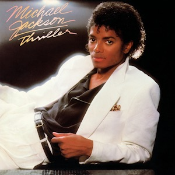

Albums
Log In
Registreer
The Weeknd
My Dear Melancholy
- Call Out My Name | 3:48
- Try Me | 3:41
- Wasted Times | 3:40
- I Was Never There | 4:01
- Hurt You | 3:50
- Privilege | 2:51
Billie Eilish
dont smile at me
- COPYCAT | 3:15
- idontwannabeyouanymore | 3:41
- my boy | 2:51
- watch | 2:58
- party favor | 3:25
- bellyache | 2:59
- ocean eyes | 3:30
- hostage | 3:49
- &burn | 2:59
The Weeknd
Starboy
- Starboy ft. Daft Punk | 3:50
- Party Monster | 4:09
- False Alarm | 3:40
- Reminder | 3:40
- Rockin' | 3:39
- Secrets | 4:26
- True Colors | 3:26
- Stargirl Interlude ft. Lana Del Rey | 1:52
- Sidewalks ft. Kendrick Lamar | 3:51
- Six Feet Under ft. Future | 3:58
- Love to Lay | 3:43
- A Lonely Night | 3:40
- Attention | 3:18
- Ordinary Life | 3:42
- Nothing Without You | 3:19
- All I Know ft. Future | 5:21
- Die For You | 4:20
- I Feel It Coming ft. Daft Punk | 4:29
Travis Scott
Astroworld
- STARGAZING | 4:31
- CAROUSEL | 3:00
- SICKO MODE | 5:13
- R.I.P SCREW | 3:06
- STOP TRYING TO BE GOD | 5:38
- NO BYSTANDERS | 3:38
- SKELETONS ft. The Weeknd| 2:26
- WAKE UP | 3:52
- 5% TINT| 3:16
- NC-17 | 2:37
- ASTROTHUNDER | 2:23
- YOSEMITE | 2:30
- CAN'T SAY | 3:18
- WHO? WHAT! | 2:57
- BUTTERFLY EFFECT | 3:11
- HOUSTONFORNICATION | 3:28
- COFFEE BEAN | 3:29

Michael Jackson
Thriller
- Wanna Be Startin' Somethin' | 6:03
- Baby Be Mine | 4:20
- The Girl Is Mine | 3:42
- Thriller | 5:58
- Beat It | 4:18
- Billie Jean | 4:54
- Human Nature | 4:06
- P.Y.T | 3:59
- The Lady in My Life | 4:59
The Weeknd
Trilogy
- High For This | 4:09
- What You Need | 3:16
- House of Balloons/Glass Table Girls | 6:47
- The Morning | 5:14
- Wicked Games | 5:25
- The Party & The After Party | 7:39
- Coming Down | 4:55
- Loft Music | 6:03
- The Knowing | 5:41
- Twenty Eight | 4:18